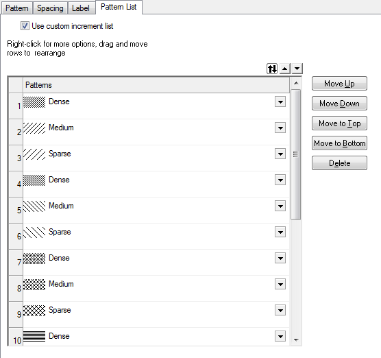

Die Registerkarte Musterliste (Details Zeichnung)
PD-Dialog-PatternList-Tab
Diese Registerkarte ist nur verfügbar, wenn Sie Inkrement oder Indexieren für das Füllmuster auf der Registerkarte Muster auswählen. Die Musterliste kann vom Anwender benutzerdefiniert angepasst werden, um verschiedene Muster für verschiedene Datenpunkte in einer Datenzeichnung festzulegen.
_Pattern_List_Tab/Alert_icon.png) |
Mit Origin 2019 begann ein stufenweiser Ausstieg der Registerkarte Musterliste. Um eine Musterliste zu bearbeiten, gehen Sie zur Registerkarte des Elements, das Sie anpassen möchten, im Dialog Details Zeichnung (für Säulendiagramme z. B. die Registerkarte Muster).
|

Benutzerdefinierte Inkrementliste verwenden
Dieses Kontrollkästchen ist standardmäßig deaktiviert. In diesem Fall wird die Standardinkrementliste verwendet.
Aktivieren Sie dieses Kontrollkästchen, um das Musterinkrement in der Liste der Muster benutzerdefiniert anzupassen.
Musterliste
Sie können die Musterliste benutzerdefiniert anpassen, speichern und neu laden. Weitere Optionen finden Sie im Kontextmenü.
Musterliste benutzerdefiniert anpassen
Ein Muster benutzerdefiniert anpassen
Klicken Sie für jede Zeile in der Liste auf die dreieckige Schaltfläche und wählen Sie ein Standardfüllmuster aus.
Die Musterliste neu anordnen
Ausgewählte Zeile(n) in der Musterliste mit denselben Methoden wie zum Neuordnen der Farbliste verschieben, hinzufügen oder löschen.
Musterliste speichern und laden
Sie können mit der rechten Maustaste klicken und im Kontextmenü wählen, ob eine Inkrementliste gespeichert oder geladen werden soll. Dazu verwenden Sie die gleichen Methoden wie zum Speichern und Laden einer Inkrementliste.
Musterliste kopieren und einfügen
Um eine benutzerdefinierte Farbmusterliste auf andere Zeichnungen anzuwenden, können Sie mit der rechten Maustaste auf die Liste klicken und Kopieren wählen. Wechseln Sie dann zur Registerkarte Musterliste der anderen Zeichnungen, klicken Sie mit der rechten Maustaste auf die Liste und wählen Sie die Option Einfügen.